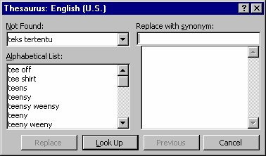

6. Menggunakan thesaurus
Thesaurus adalah sarana yang menyediakan sinonim dan antonim kata-kata pada
dokumen. Menggunakan thesaurus dapat membantu Anda menghindari pengulangan
pada tulisan Anda (dan tentu saja memperbaiki perbendaharaan kata). Anda dapat
menggunakan thesaurus seperti kamus untuk menemukan makna kata yang tidak
Anda kenali.
Sinonim adalah padanan kata, sedangkan antonim berarti lawan kata.
6.1 Memeriksa sinonim
Untuk memeriksa Sinonim menggunakan Thesaurus, langkahnya:
1. Letakkan pointer pada kata yang dipilih.
2. Tekan Shift+F7, atau aktifkan Languagea Tools a Thesaurus. Kotak
dialog Thesaurus akan terbuka (Gambar 5.16).

Gambar 5.16 Kotak dialog Thesaurus
3. Kotak dialog ini memiliki beberapa komponen, antara lain:
• Kotak Looked Up menampilkan kata yang dipilih.
• Kotak Meanings untuk mendata makna lain bagi kata tersebut. Jika
kata tersebut tidak dapat ditemukan, FrontPage XP akan
menampilkan sebuah kotak Alphabetical List yang berisi daftar
kata dengan ejaan sama dengan kata terpilih.
• Jika thesaurus menemukan satu atau lebih makna untuk kata
tersebut, kotak dialog akan menampilkan daftar Replace with
Synonim yang berisi sinonim dari kata tersorot. Jika makna kata
tidak ditemukan, kotak dialog akan menampilkan daftar Replace
with Related Word, yaitu daftar kata yang artinya mirip.
4. Pada saat kotak dialog thesaurus ditampilkan, ada beberapa hal yang dapat
Anda lakukan:
• Untuk menemukan sinonim dari kata tersorot pada daftar Replace
with Synonim atau Replace with Related Words, klik tombol Look
Up.
• Untuk menemukan sinonim untuk kata pada daftar Meanings,
pilihlah kata tersebut lalu klik Look Up.
5. Untuk mengganti kata pada dokumen dengan kata tersorot pada daftar
Replace with Synonim atau Replace with Related Word, klik tombol
Replace.
6. Untuk menutup thesaurus tanpa membuat perubahan, klik tombol Cancel.
6.2 Memeriksa antonim
Setelah memeriksa dan mencari kata padanan, sebaliknya kita juga bisa mencari kata
lawannya. Langkah yang digunakan adala h:
1. Pilihlah kata yang ingin diperiksa.
2. Dari menu Tools, klik Thesaurus … FrontPage XP menampilkan seluruh
hasil temuannya pada kotak dialog Thesaurus.
3. Pada kotak daftar Meanings, pilihlah Antonyms. FrontPage XP
menampilkan sejumlah kata yang berlawanan artinya dengan kata yang
Anda pilihlah.
4. Jika Anda ingin mengganti kata tersebut dengan usulan pada kotak daftar
Replace with Antonym, klik tombol Replace.
5. Jika Anda ingin menampilkan daftar sinonim kata pada kotak daftar Replace
with Antonym, klik tombol Look Up.
6.3 Memeriksa kata Dasar
Selain kata yang pasti, yaitu padanan atau lawannya, kita juga bisa mencari kata
dasar atau kata lain yang mempunyai arti mirip. Langkah yang diperlukan adalah:
1. Pilihlah kata yang ingin diperiksa.
2. Dari menu Tools, klik Thesaurus … FrontPage XP menampilkan seluruh
hasil temuannya pada kotak dialog Thesaurus.
3. Pada kotak daftar Meanings, pilihlah Related Words. FrontPage XP
menampilkan kata dasar dari kata yang Anda pilihlah.
4. Jika Anda ingin mengganti kata tersebut dengan usulan pada kotak daftar
Replace with Related Words, klik tombol Replace.
5. Jika Anda ingin menampilkan daftar sinonim kata pada kotak daftar Replace
with Related Words, klik tombol Look Up.
Copyright © Herlan Lesmana
Created with the Freeware Edition of HelpNDoc: Full featured Documentation generator